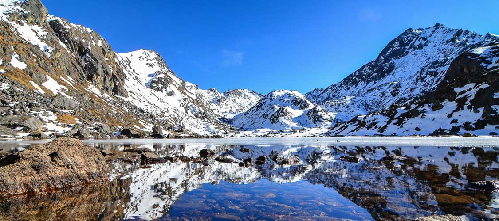

Assignment 1
Student Name: Shankar Sigdel - student #301110925 - First Semester
I am a Student in Software Engineering Technology Program at Centennial College.
I Previously Studied at Tribhuvan University, Kathmandu, Nepal.
We should drink lot of H2O.
My prefered Brand of Mobile device is iphone®.
One of my favourate quotes is:
"A designer knows he has achieved perfection not when there is nothing left to add, but when there is nothing left to take away." ~~~ANTOINE DE SAINT~~~
Some of my favourate things to do are:
- Playing Volley Ball
- Travelling Different Countries
- Outing with Friends
- Reading Books and Novels
- Watching Movies
- Spending time with Family Members
Among my Favourate things to do that i have stated above, i am going to explain one of my evperiences that i had experienced in my life.
The Adventurous Experience of my Life:
"I am originally from Nepal. There are lots of Places to go for trekking. Among them, I have visited Gosainkunda. Gosainkunda is a religious as well as tourist area which is rich for its scenic beauty and magnificent mountain views.It is one of the best and famous trekking destinations of the world.I have visited this place takking 5 days of treak.It gives glimpse into the diverse landscape, culture, and nature of Nepal. Gosaikunda has a lake At an altitude of 4380m,the Gosaikunda lake is a sacred place for both the Hindus and Buddhists. In that 5-days of trek i got perfect satisfaction from the scenic beauty of nature.It allows us to experience high altitude trek within a short duration. The trek period provides spectacular views of the snow-capped mountain peaks.The trek takes through beautiful, lush green forests of rhododendron, oak, pine, and birch. If you have a plan to have a treak and visit somebeautiful places, i suggest you to visit Nepal in general and Gosainkunda in Particular"
This Picture Represents one of the Beautiful Scenic areas of Gosaikunda:
Top Of The Page
Assignment 1
Assignment 2
Assignment 3
Assignment 4
Project
Class Example Week 03
Class Example Week 04
Class Example Week 05
Class Example Week 06
Class Example Week 07
Class Example Week 09
Class Example Week 10
Project Class Example Week 11